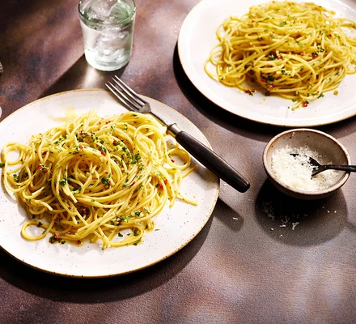

Spaghetti Aglio E Olio Recipe

Description
A classic italian dish ready in the time it takes to boil the pasta.
It is simple, flavourful and perfect for busy days.
Ingredients
- 200g spaghetti
- 3 tbsp extra virgin olive oil
- 3-4 garlic cloves, finely chopped
- 1/2 small red chilli, finely chopped
- A small handful of parsley, finely chopped
Steps
- Bring a large pan of well-salted water to the boil and cook the spaghetti for about 10 mins, or until al dente. It should retain a little bite.
- When the pasta is nearly ready, heat the oil in a frying pan set over a medium heat and sizzle the garlic and chilli, if using, for 1 minute until fragrant and the garlic is lightly golden but not brown (the garlic will taste bitter if it gets too dark).
- Drain the spaghetti and add it to the garlicky oil with the parsley. Season and toss to combine, then serve.
Home